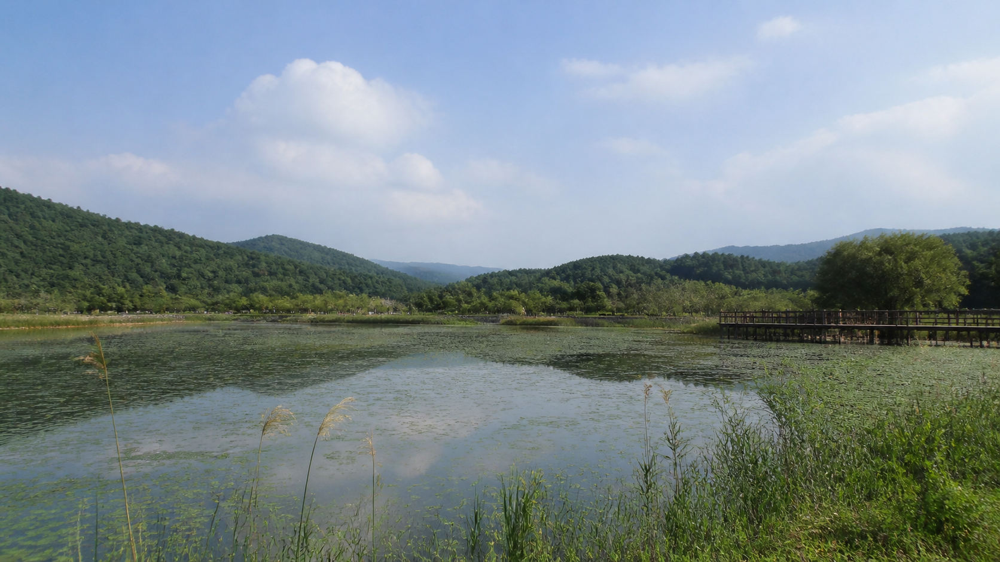
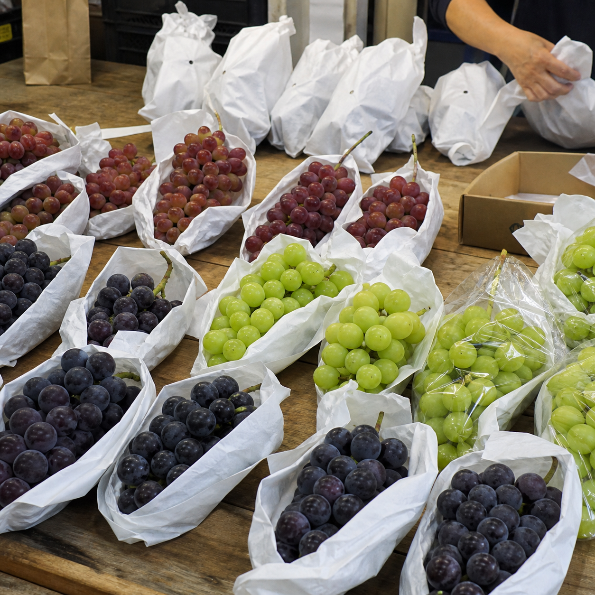
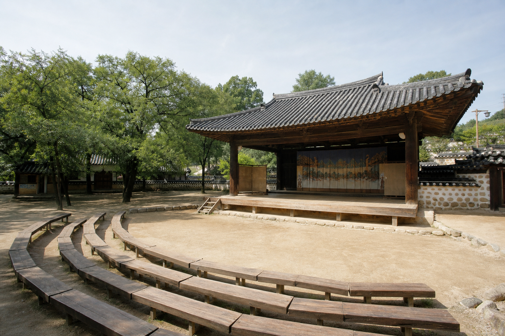

9월 5일(토)
01
금광달빛축제 에디터 픽
이번 호 03 코스와 그대로 이어진다. 낮에 걸었던 수석정수변화원을 밤에 다시 보는 구성이다. 낮의 호수와 밤의 호수는 다른 장소다. 체험부스와 공연이 예정돼 있다.
03 ONE DAY — 낮의 같은 장소이번 주말이 아니어도 괜찮습니다
8월호를 읽고 나면 아마 가고 싶어질 텐데, 서두르지 않아도 된다. 9월 안성은 거의 매 주말 무언가가 열린다.

표는 훑는 용도, 아래 카드는 고르는 용도입니다. 10월 초 일정은 맨 아래 「10월, 미리 알아두세요」를 보세요.
| 날짜 | 요일 | 행사 | 장소 |
|---|---|---|---|
| 9월 5일 | 토 | 금광달빛축제 | 금광호수 수석정수변화원 |
| 9월 18~20일 | 금~일 | 안성맞춤포도축제 | 서운면 양촌리 제4산업단지 일원 |
| 9월 19~20일 | 토~일 | 일죽 청미음악회 | 청미천 둔치공원 |
| 9월 24~25일 | 목~금 | 죽주대고려문화축제 | 동안성시민복지센터 일원 |
에디터 픽 두 장만 사진을 붙였습니다. 나머지는 정보로 충분합니다.
9월 5일(토)
01
이번 호 03 코스와 그대로 이어진다. 낮에 걸었던 수석정수변화원을 밤에 다시 보는 구성이다. 낮의 호수와 밤의 호수는 다른 장소다. 체험부스와 공연이 예정돼 있다.
03 ONE DAY — 낮의 같은 장소
9월 18~20일(금~일)
02
포도 홍보와 시식, 품평회가 열린다. 축제장에서도 ‘안성 포도’라는 큰 이름만 보지 말고 농가명과 품종, 수확 정보를 살피시길. 백 개의 봉지에는 백 개의 밭이 있다.
06 SEASON PICK — 포도 고르는 법9월 19~20일(토~일)
03
청미천 둔치공원에서 열리는 야외 음악회. 강가에서 저녁을 보내기 좋은 시기다. 프로그램 성격과 개막 시간은 방문 전 한 번 더 확인한다.
9월 24~25일(목~금)
04
동안성시민복지센터 일원에서 열린다. 고려의 흔적을 따라가는 지역 축제다. 주말 방문을 계획했다면, 이 축제는 목요일과 금요일에 열린다는 점만 먼저 기억하면 된다.
평일(목·금) 개최. 주말 방문을 계획한다면 참고

11월 29일까지 · 매주 토·일요일 오후 2시~3시 30분
축제를 놓쳐도 괜찮다. 주말마다 여는 공연이 하나 있다. 안성남사당공연장에서 90분간 진행된다.
10월 2~5일(금~월)
안성맞춤랜드와 안성천 일원에서 나흘간 열린다. 안성의 가장 큰 축제다. 10월호에서 자세히 다룬다.
문의 031-678-5414